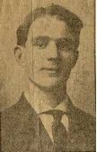
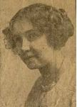

|
 | ||||||||||
| Spouses | |||||||||||
|
 | ||||||||||
|
|||||||||||
| Notes for Franklin C. "Frank" KELLER | |||||||||||
| [GREATx3 UNCLE] 1895 Frank's parents moved their small family out of her Grandparent Keller's building at 224 West Main Street in Fort Wayne, Indiana to a newly constructed home at 1 Jessie Avenue in Fort Wayne. 1906 Frank was 14 years old, living with his parents, and working as a "former" at the Wayne Knitting Mills. 1912 Frank, 21 years old, was working as a "checker" for the Pennsylvania Railroad. He would later work for the New York, Chicago & St. Louis (Nickel Plate) Railroad. 1914 Frank was still living with his parents and was now a "fireman" for the Nickel Plate Railroad. 25 June 1914 Frank married Myrtle E. Baxter, at the home of her parents at 1505 Oakland Street in Fort Wayne. The wedding took place at 5 p.m. in the presence of "30 and 40 friends and family members." The Reverend C. O. Shirey, of the Bethany Church, performed the ceremony. Following the wedding, the couple lived at 1425 Boone Street in Fort Wayne. January 1972 Frank, 80 years old, was living in Calumet City, Illinois. | |||||||||||
| Last Modified 2 Jul 2006 | Created 31 Dec 2006 using Reunion for Macintosh |